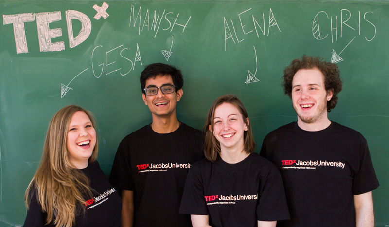

Main Organizers

- Gesa Körte - Germany
- Manish Kumar - Pakistan
- Alena Di Primio - Germany
- Chris Casebeer - USA
The Organizing Team
In March 2014, far north in the musical city of Bremen, Germany, forever famous for
the "Bremen Town Musicians,” the first TEDxJacobsUniversity was conceived and held for
the public. Last year, the theme “The Tree of Life,” referred to the genesis of all life
and the fruit that keeps us all going. Last year produced immeasurable fruit in the lives
of those who attended. It provided them a stimulating discussion about biology, evolution,
neuroscience, and the importance of evolving to overcome life’s challenges.
This May 2015, we continue with a new set of stories. We are excited to bring to you our
second TEDxJacobsUniversity—“Tales of Change”. Come hear the tales of how the world has
and will change. Excite your mind with discussions of how society, art, humans, and science
develop and what lies ahead for all of us. Immerse yourself in the tales of a past, present,
and future discussion in the constant ebbing waves of time. Join us for TEDxJacobsUniversity
as we carry on a new tradition and meet all the people who have worked hard to make it happen.
Main Organizers
IT Committee
The IT Committee has the responsibility of designing and maintaining the website, creating the reservation portal for the audience, organising the live-streaming of the event on the day itself, and communicating with the communications office regarding all the photography and video-recording equipment.
Speakers Committee
The Speakers team is responsible for securing speakers for our great event. The team selects a number of speakers from suggestions from the entire team and then contacts the speaker and arranges for their travel to our lovely city of Bremen!
Logistics Committee
The team is responsible for all the event preparations on the day itself, for organising the pre-reception and the post-reception and making sure that our speakers feel comfortable at the university. The team has a great number of surprises waiting for you at our conference on 3rd May 2015!
PR Committee
The PR Team is responsible for taking care of the social media channels, developing a great outreach programme, recording and editing promotional videos and talks of the conference, and designing the TEDx Stage for the main event day.
Finance Committee
The finance committee is responsible for securing funding for the event from both internal and external sources, allocating budgets for all the other committees, and most of all ensuring that the event uses all its resources efficiently.